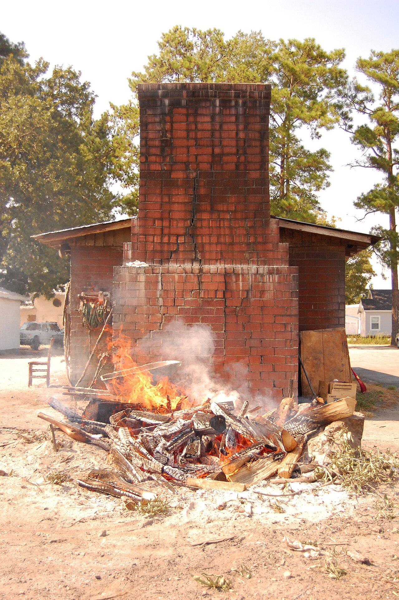
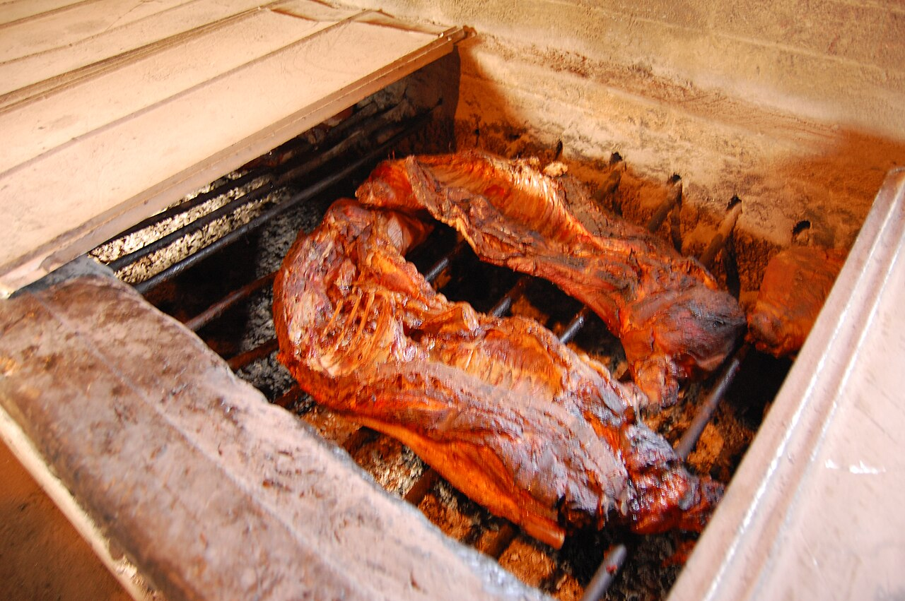
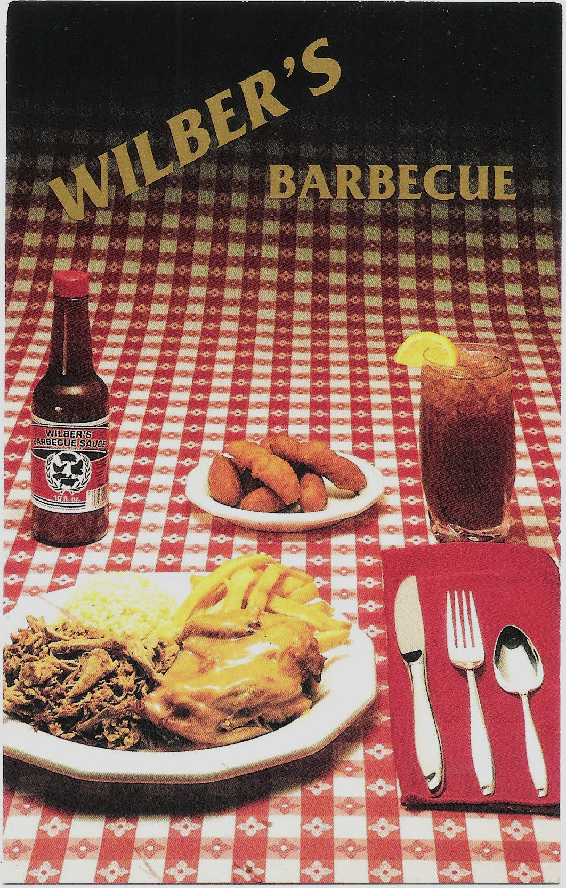

a place · NCWilber's Barbecue
also: Wilber's · Wilbers BBQ · Wilber's BBQ

A whole-hog pit on U.S. 70 east of Goldsboro, Wayne County, opened in 1962 by Wilberdean 'Wilber' Shirley and cooked the same way since: split hogs over oak coals in open pits in a cinder-block cookhouse behind a red-brick restaurant with knotty-pine walls and red-checked tablecloths. It closed in March 2019 over unpaid taxes and reopened in July 2020 under Goldpit Partners, a group of Goldsboro natives who bought it and restored the building. The pork is hand-chopped on oak blocks and seasoned with vinegar and spices; fried chicken, collards, fried okra and hushpuppies come alongside.
When they are open
Wednesday to Saturday 11 to 7, Sunday 11 to 3.
open closed not published · Cited · web-wilbersbbq · checked 2026-09-16 · why so many close Sunday
The story Cited · web-ourstate-wilbers-way
Wilber Shirley learned the trade at Griffin's Barbecue in Goldsboro and in 1962 bought the former Hill's Barbecue on Highway 70 and put his name on it. He told the authors of Holy Smoke that he cooked 'split halves of whole hogs over oak coals in closed pits,' and that the grease hitting the coals made the smoke flavor. Staff split and cut oak all year; on a Labor Day weekend the pits held up to 130 pigs, and the dining rooms seated more than 300. Shirley worked twelve or thirteen hours a day, six days a week, for more than forty years, with some ninety employees. In March 2019 the restaurant was shut for nonpayment of taxes. Willis B. Underwood III, an insurance salesman and lifelong regular, gathered other customers into Goldpit Partners, bought the place, kept the paneling and the tablecloths, and reopened it in July 2020 — curbside only at first, Wednesday to Sunday, with a shortened menu. 'I just didn't want to see the smoke die,' he told Our State. Shirley's son-in-law Dennis Monk took a management role, and Shirley, who turned ninety in June 2020, advised. He died in April 2021. Pitmaster Jackie Martin, at the pits nearly forty years, works from two in the afternoon to five or six in the morning.
How it is done Cited · web-wilbersbbq
Whole hogs cook all night over oak embers on open pits — nine hours by one account, twelve or more by another — then are hand-chopped on oak blocks and seasoned with vinegar and spices. The plate is barbecue with fried okra and slaw; the sandwich is barbecue and slaw; the 'Bone Box' is a tray-sized pig pickin', the meat left on the bone for pulling by hand. Sides run to hushpuppies, collards, cabbage, macaroni and cheese and fried chicken; the desserts — pecan pie, coconut and carrot cake, banana pudding, Wilber's cookies — are made in the house.
Today Cited · web-wilbersbbq
Open Wednesday to Saturday 11 to 7 and Sunday 11 to 3, at 4172 U.S. Highway 70 East, Goldsboro, per the restaurant's site in September 2026. Goldpit Partners own it.
Facts
| state | NC |
|---|---|
| status | open |
| founded | 1962 |
| fuel | wood |
| styles | Eastern North Carolina barbecue |
| region | Eastern North Carolina |
| address | 4172 US Highway 70 E, Goldsboro, NC, 27534 · Wayne County Cited · web-wilbersbbq |
| where | 35.3506, -77.9225 (street) · OpenStreetMap · open in maps Harvested · osm |
| links | Wilber's Barbecue — official · Where There's A Wilber's, There's A Way — Our State |
| confidence | high · needs verification · updated 2026-09-16 |
Near here
Crow-flies miles; the road is always longer. The finder sorts every pit in both states from where you are.
- 4.6 mi — Scott's Famous Barbecue Goldsboro ⚫ Closed ✊🏾 Black-owned
- 6.3 mi — Grady's Barbecue Dudley ✊🏾 Black-owned ♀ Woman-owned 🐖 Whole hog
- 20.2 mi — Morris Barbeque Hookerton 🐖 Whole hog 📅 Weekends only ⏳ Closes when sold out
- 23.9 mi — Parker's Barbecue Wilson 🐖 Whole hog 💵 Cash only
- 25.2 mi — Jack Cobb & Son Barbecue Place Farmville ✊🏾 Black-owned 🔥 Cooks over wood 🐖 Whole hog
Its kin
Who points back
Pictures
{kind=link}

{kind=link}

{kind=link}

Sources
- Where There's A Wilber's, There's A Way — Our State · link
- Wilber's Barbecue in Goldsboro, NC — Our State · link
- Wilber's Barbecue — official site · link
- Loyal fans restore, reopen Wilber's Barbecue in Goldsboro — WRAL (15 Jul 2020) · link
- Wilber Shirley, original owner of Wilber's Barbecue in Goldsboro, dies at 90 — WRAL (5 Apr 2021) · link
- Wilber's Barbecue Bounces Back — Garden & Gun · link
- Celebrating the Life of North Carolina's Barbecue Legend Wilber Shirley — UNC Press Blog (16 Apr 2021) · link
- Holy Smoke: The Big Book of North Carolina Barbecue — John Shelton Reed, Dale Volberg Reed, with William McKinney, 2008 · link
- True 'Cue NC — certified pits · link
- NC Historic Barbecue Trail · link
- Flickr Commons · link
- State Archives of North Carolina on Flickr Commons · link
- PhC.184 Massengill Postcard Collection · link
Where it came from: Cited a source we name · Harvested pulled from an open dataset · Tradition what the tradition says, hedged · Inference this project's reasoning · Field somebody stood there. This record as JSON.